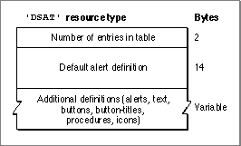
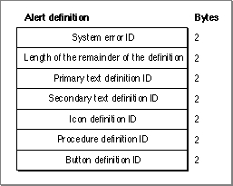
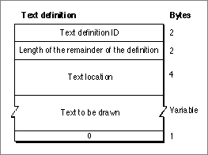
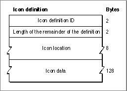
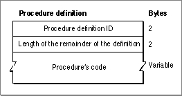
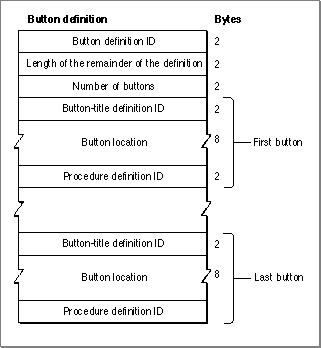
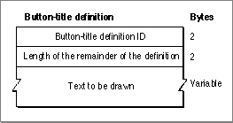

Legacy Document
Important: The information in this document is obsolete and should not be used for new development.
Important: The information in this document is obsolete and should not be used for new development.


The System Error Alert Table Resource
The System Error Handler stores system error alert tables in resources with resource type'DSAT'. During system startup, the system error alert table resource with resource ID 0 is loaded. This resource describes the "Welcome to Macintosh" alert box. Immediately thereafter, that table is disposed of and replaced with the system error alert table resource with resource ID 2.
A system error alert table consists of a group of alert definitions, text definitions, icon definitions, procedure definitions, button definitions, and button-title definitions. These definitions provide information about the alert box as a whole: the text, icon, buttons, and titles for those buttons to be displayed in the alert box, and the procedures to be executed. The first word (2 bytes) of any definition contains a definition ID, which must be unique across all definitions. Some definitions reference other definitions. For example, a button definition includes a word to reference a button-title definition and a word to reference a procedure definition. This section describes the format of the system error alert table as a whole and of the various types of definitions.
- Note
- In early versions of system software the system error alert table was called the "user alert table" and its resource type was of type
'INIT'.
A system error alert table's first word indicates the number of entries in the table. Following these 2 bytes is a 14-byte alert definition that defines an alert box to be used for all system errors that do not have their own alert box definitions. This alert box definition is followed by additional definitions, which need not be in any particular order. For example, a system alert table could contain all alert box definitions before any other definitions, but this might not be the case. Figure 2-5 illustrates the overall structure of a system error alert table.
Figure 2-5 The structure of a system error alert table

All definitions in a system error alert table contain a 4-byte definition header. The first word of the header is the unique definition ID for that definition, which corresponds to the appropriate system error for alert box definitions, and the second word is a number indicating the length in bytes of the remainder of the definition.
Figure 2-6 shows the format of an alert definition.
Figure 2-6 The structure of an alert definition

Following the definition header, the alert definition consists of five word-length fields containing the definition IDs for a primary text definition, a secondary text definition, an icon definition, a procedure definition, and a button definition. For each alert definition, two button definitions must be defined with consecutive numbers. The lower of these numbers is specified in the button definition ID field. When an application specifies a resume procedure, the
SysErrorprocedure uses the button definition with the higher ID.A definition ID of 0 is used for any field to which no definition corresponds. For example, if a system error alert box contains only one text string, the field for the secondary text definition ID contains 0. A button definition ID of 0 indicates that
SysErrorshould return to the procedure that called it; this is used for disk-insertion alerts. If the procedure definition ID is 0,SysErrordoes not invoke an alert procedure (which should not be confused with a resume procedure).A text definition specifies the text that is to be drawn in the system error alert box. Because an alert box can have up to two lines of text, the alert definition allows for two text definitions. The primary text definition specifies the first line of text in the system error alert box and the secondary text definition specifies the second line of text.
Figure 2-7 illustrates the format of a text definition.Figure 2-7 The structure of a text definition

Following the definition header, a text definition includes a 4-byte field indicating the point, specified in global coordinates, at which the text is to be drawn. Following this field is a variable-length field consisting of the text to be drawn. The System Error Handler responds to the slash (/) character by advancing to the beginning of the next line. This mechanism allows a single text definition to consist of a multiline message. The last byte of the definition must contain
0to indicate the end of the text.An icon definition specifies what icon the System Error Handler draws in the system error alert box, where to draw it, whether the icon is black-and-white or color, the bit depth of the icon, and other data as necessary. Figure 2-8 shows the format of an icon definition.
Figure 2-8 The structure of an icon definition

Following the definition header, the icon definition contains an 8-byte field indicating the rectangle, specified in global coordinates, in which to draw the icon. The following 128 bytes consist of icon data.
An alert definition uses a procedure definition to specify a procedure to be executed whenever the
SysErrorprocedure draws a system error alert box. Button definitions (described next) use procedure definitions to specify an action to be taken when the user presses a particular button. Figure 2-9 illustrates the format of a procedure definition.Figure 2-9 The structure of a procedure definition

After the definition header, a procedure definition consists only of a variable-length field that contains the procedure's code. The procedure takes no parameters.
A button definition specifies the buttons that the System Error Handler should draw in the system error alert box. A button definition may reference 0, 1, 2, or more buttons. Figure 2-10 shows the format of a button definition.
Figure 2-10 The structure of a button definition

Following the definition header is a word indicating the number of buttons in the button definition. Following this is 12 bytes for each defined button. Each of these 12-byte groups consists of a word containing the button-title definition ID for the text within the button, 8 bytes containing a rectangle, in global coordinates, that specifies the location of the button, and a word containing the procedure definition ID for the procedure to be executed when the button is pressed.
A button-title definition specifies the text to be drawn within a button. Figure 2-11 shows a button-title definition. Following the definition header of the button-title definition are the actual characters in the string.
Figure 2-11 The structure of a button-title definition
